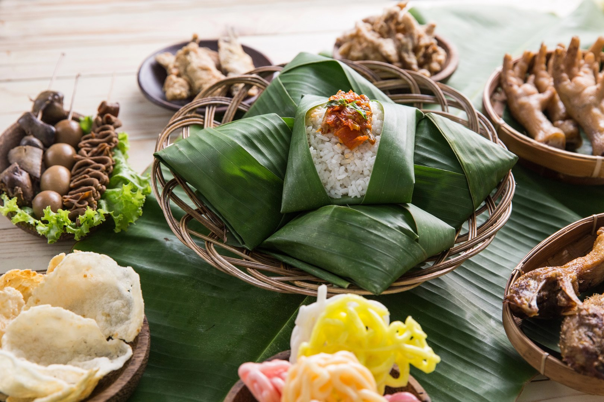
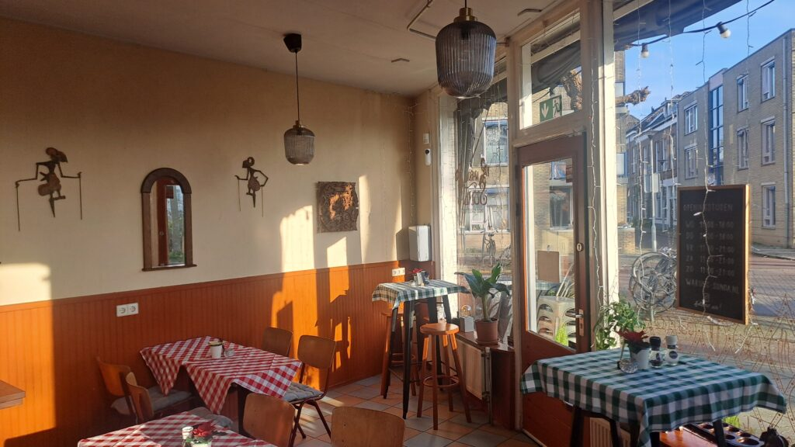

Mari makan!
Indo street food. De smaken van Bandung.
Vers bereide gerechten die je meenemen naar de straten van Garut, West-Java. Kom eten, haal af, of laat ons koken voor jouw feest.


Selamat datang bij Warung Sunda
Bij ons draait alles om gezelligheid, gemoedelijkheid en authentiek Indonesisch eten, bereid met verse, lokale ingrediënten en een flinke scheut liefde.
Laat je verrassen door de rijke smaken van de Indonesische keuken: van kruidige rendang en geurende nasi goreng tot frisse gado-gado en hartige saté, precies zoals in Indonesië zelf.
Warung Sunda: authentiek, vers en vol van smaak.


Sfeerbeelden van Indonesische gerechten.
Of kom afhalen
Geen tijd om te blijven eten, of geen zin om te koken? Bel of kom langs en geniet thuis van onze gerechten.
Op woensdag zijn we van 16.00 tot 19.30 open voor afhalen. Donderdag tot en met zondag kun je van 17.00 tot 21.00 eten en afhalen.
Reserveer je tafel
Een romantische avond, of gezellig dineren met vrienden: bij Warung Sunda geniet je samen van een smakelijk avontuur, met authentieke Indonesische gerechten in een warme sfeer.
Gegarandeerd een plek
Zeker van een fijne tafel, ook als het druk is.
Geen wachttijd
Direct aan tafel en genieten van heerlijk eten.

Indo street food bij u op locatie
Een verjaardag, bedrijfslunch, receptie of een ander feest? Wij verzorgen catering met de authentieke smaken van West-Java, helemaal op maat.
Neem contact op, dan bespreken we samen de mogelijkheden.
Kom langs
Noordelijke Parallelweg 28
6813 DD Arnhem
06 392 86 490
warungarnhem@gmail.com
Instagram: @warung_sunda_arnhem
Parkeren
Gratis: Noordelijke Parallelweg tot aan de Brouwerijweg.
Betaald: Brouwerijweg en Noordelijke Parallelweg tot aan het station.
Openingstijden
| Maandag | gesloten |
|---|---|
| Dinsdag | gesloten |
| Woensdag | 16.00-19.30alleen afhalen |
| Donderdag | 17.00-21.00 |
| Vrijdag | 17.00-21.00 |
| Zaterdag | 17.00-21.00 |
| Zondag | 17.00-21.00 |
Blijf op de hoogte
Ontvang als eerste onze nieuwste gerechten, aanbiedingen en speciale evenementen.